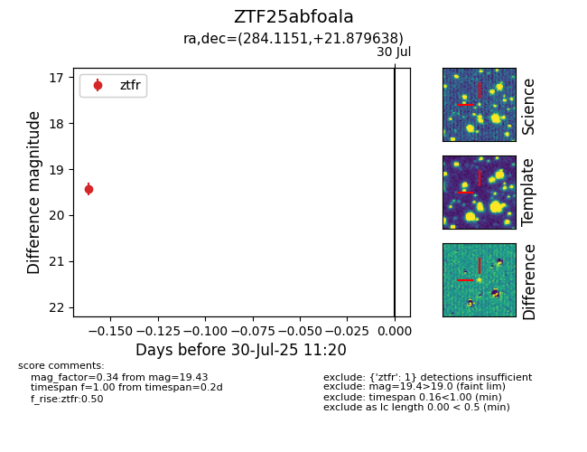

Target ZTF25abfoala at 2025-07-30 11:20, see:
FINK: fink-portal.org/ZTF25abfoala
Lasair: lasair-ztf.lsst.ac.uk/objects/ZTF25abfoala
ALeRCE: alerce.online/object/ZTF25abfoala
alt names
ZTF25abfoala (ztf,fink)
coordinates:
equatorial (ra, dec) = (284.1151,+21.87964)
galactic (l, b) = (53.1096,+8.73291)
photometry
last ztfr=19.43
1 ztfr detections
